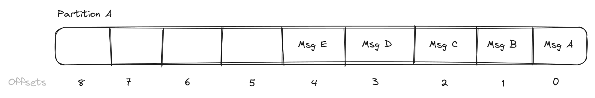
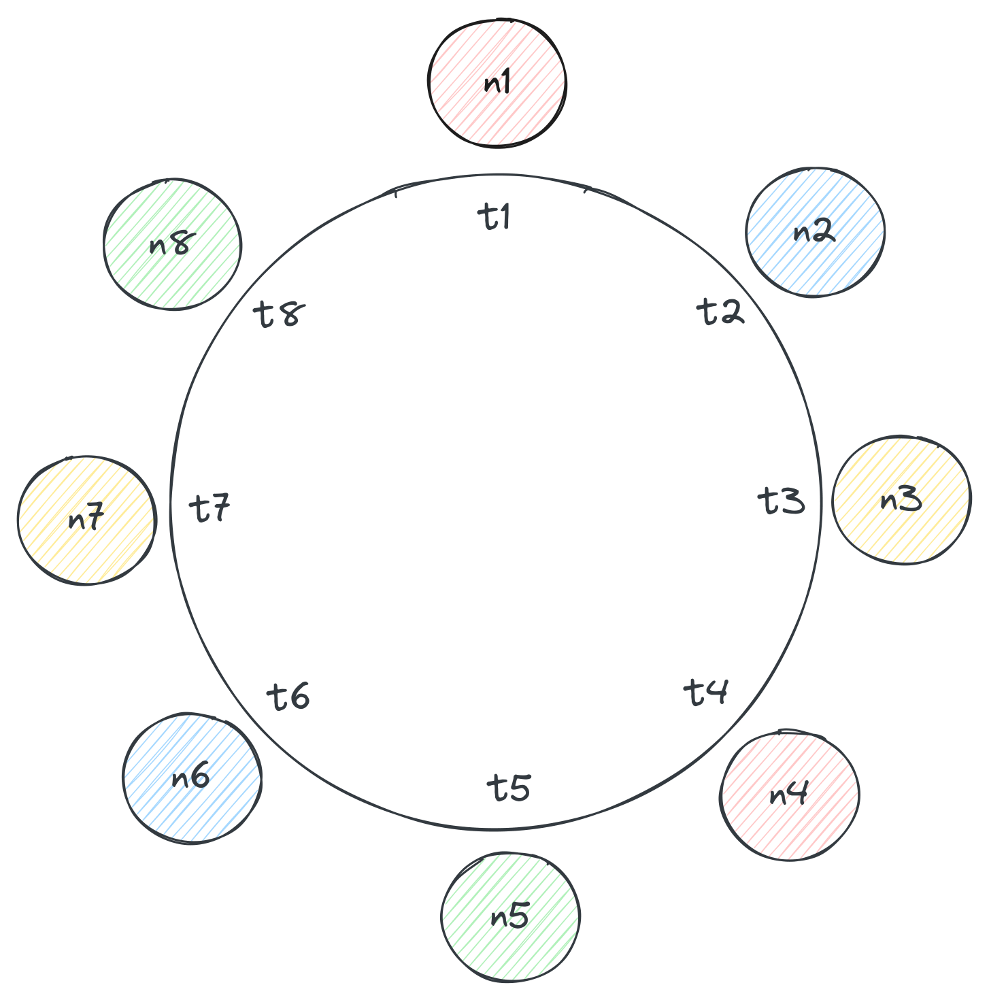
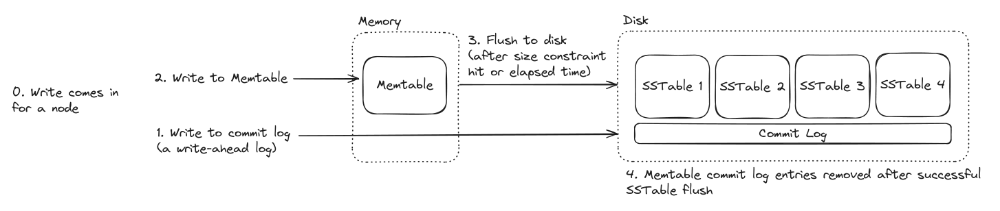
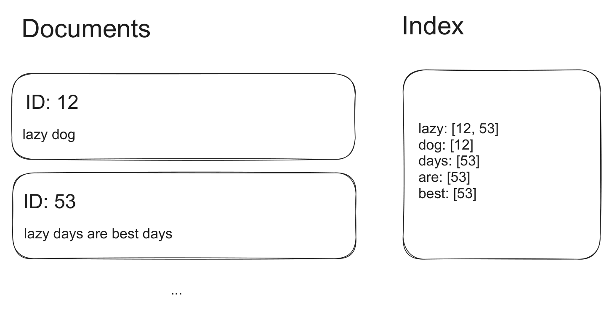
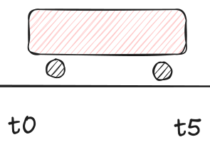

Pick the simplest component that satisfies the requirement, then defend it. Deep versions: see
../4-KeyTechnologies/in the source library.
| Need | Pick | Alternative | Why |
|---|---|---|---|
| Durable OLTP | PostgreSQL | DynamoDB | ACID, relationships, constraints, SQL, indexes, JSONB, PostGIS; DynamoDB only if access is predictable key-value/document. |
| Key-value at scale | DynamoDB | Cassandra | DynamoDB is managed AWS partition+sort-key scale; Cassandra is open-source write-heavy wide-column scale with more ops. |
| Cache/leaderboard | Redis | PostgreSQL materialized data / DAX | In-memory data structures, TTLs, counters, sorted sets, geo, pub/sub; not source of truth. |
| Full-text & geo search | Elasticsearch | PostgreSQL FTS + PostGIS | Advanced relevance, fuzziness, faceting, ranking, distributed search, rich geo; Postgres first for simple/moderate search. |
| Event streaming/replay | Kafka | SQS / Redis Streams | Durable partition logs, offsets, retention, replay, and many consumer groups; queues win for simple retries/DLQ. |
| Stream aggregation | Flink | Kafka consumer / batch job | Stateful windows, watermarks, checkpoints, joins, exactly-once managed state; skip for stateless transforms. |
| Coordination | ZooKeeper | etcd / Consul / cloud discovery | ZNodes, watches, sessions, quorum-backed leader election/locks; managed/platform-native is simpler when available. |
| Blob storage | S3/GCS/Azure Blob | Database metadata + CDN | Store large bytes cheaply/durably; DB stores metadata, ownership, status, and blob URL. |
| Fan-out | Kafka consumer groups | Redis Pub/Sub / per-consumer queue | Kafka for durable replayable fan-out; Redis Pub/Sub for online ephemeral fan-out; queues for worker distribution. |
| Edge/API management | API Gateway + LB + CDN | Direct service / service mesh | One front door, auth/rate limits/routing, horizontal scale, edge cache; direct call is clearer for one simple backend. |
Pitch: in-memory data-structure store. Use when: low-latency cache/counter/rate-limit/leaderboard/pub-sub/modest stream data can be rebuilt or stale. Don't when: it is the durable source of truth, needs rich queries, or needs long replay.
Must be able to explain:
| Capability | Use it for | Watch out for |
|---|---|---|
| Cache with TTL/LRU | Product pages, sessions, feed/query results | TTL != correctness; eviction must be intentional. |
| Atomic counters / Lua | Fixed or sliding-window rate limits, quotas | Expire only once; hot keys overload one shard. |
| Sorted sets / geo | Leaderboards, top posts, modest nearby search | Memory growth; not full search/ranking. |
| Pub/Sub / Streams / locks | Online notifications, modest jobs, short locks | Pub/Sub loses offline messages; streams/locks are not Kafka/ZooKeeper. |
Whiteboard rules:
SET ... EX; invalidate/update on writes or accept bounded staleness.INCR + first-expire for fixed windows, or sorted-set sliding window in Lua.SET key token NX EX; release with token-checking Lua, never blind DEL.Say: "Redis is a data-structure cache: I will specify key, value type, TTL, eviction, and hot-key plan."
Trap: Treating Redis as durable truth or assuming cluster size fixes one hot key.
Pitch: distributed commit log for durable event streaming. Use when: producers/consumers must be decoupled, events retained/replayed, or many consumer groups read the same stream. Don't when: payloads are huge, sub-500ms synchronous response is required, or built-in retries/DLQ matter more than replay.
Must be able to explain:
acks=all; default delivery is at-least-once.
| Capability | Use it for | Watch out for |
|---|---|---|
| Event log + replay | Audit logs, click streams, event sourcing, index rebuilds | Retention must cover replay window; duplicates happen. |
| Queue-like workers | Transcoding, crawling, email/notifications | Commit offset only after durable side effect. |
| Fan-out | Multiple analytics/search/notification pipelines | Each group multiplies downstream load. |
| Ordered keyed processing | Ticket queues, per-game/per-user events | Bad keys create hot partitions; no global order. |
| Whiteboard rules: |
game_id for game events, ticket_queue_id for waiting room, salted/compound key for hot ads.Say: "Kafka ordering is my message key contract, and offsets are committed only after the side effect is durable."
Trap: Putting large blobs in Kafka or claiming exactly-once/global ordering without conditions.
Pitch: default durable relational OLTP store. Use when: ACID, SQL, relationships, constraints, rich indexes, JSONB, FTS, or PostGIS help. Don't when: millions of writes/sec, active-active global writes, or pure key-value access dominates.
Must be able to explain:
| Capability | Use it for | Watch out for |
|---|---|---|
| ACID OLTP | Users, orders, payments, inventory, auth | Say the transaction/lock/isolation enforcing the invariant. |
| Relationships + SQL | Posts/comments/follows, admin queries, reports | Joins and ad-hoc analytics can hit scale limits. |
| Indexes / FTS / JSONB / PostGIS | Email lookup, feeds by user/date, simple search, nearby | Indexes slow writes; ES wins for advanced search. |
| Replicas / partitioning / sharding | Read scale, time-series lifecycle, larger write scale | Replicas do not scale writes; sharding complicates cross-shard queries. |
| Whiteboard rules: |
SELECT ... FOR UPDATE; broader invariants use serializable+retry or optimistic version.Say: "PostgreSQL is my default until a specific scale, distribution, or access-pattern requirement disqualifies it."
Trap: Saying ACID without naming the race-control mechanism, or sharding before indexes/replicas/partitioning.
Pitch: AWS-managed key-value/document database. Use when: access patterns fit partition key + optional sort key and you want managed scale, replication, and per-read consistency. Don't when: joins, ad-hoc SQL/aggregation, vendor neutrality, or cheap extreme writes matter.
Must be able to explain:
Query uses a table/index key; Scan is the red flag at scale; ProjectionExpression saves bandwidth, not RCU.ConsistentRead=true on base/LSI; partition has 3 AZ replicas, leader writes, quorum 2/3.
| Capability | Use it for | Watch out for |
|---|---|---|
| Managed KV/document scale | Sessions, profiles, chat metadata, predictable product paths | Hot partition keys bottleneck despite auto-scaling. |
| Sort-key ranges | Messages by chat_id + sortable message_id |
Timestamps collide; use ULID/UUIDv7/Snowflake. |
| GSIs/LSIs | Alternate reads like messages by user_id |
GSI lag/no strong reads; LSIs must exist up front. |
| Streams/DAX/Global Tables/transactions | CDC to search, microsecond read cache, regional apps, <=100 item tx | DAX bypasses strong reads; write units/cost can dominate. |
| Whiteboard rules: |
Query hits base table, GSI, or LSI.Say: "With DynamoDB, I start from access patterns, then name PK, SK, indexes, consistency, and capacity."
Trap: Designing scans/joins or assuming GSIs are strongly consistent.
Pitch: open-source wide-column store for availability-biased, write-heavy scale. Use when: queries are known, denormalized tables are acceptable, and eventual/tunable consistency fits. Don't when: strict transactions, joins, ad-hoc aggregation, or normalized modeling are required.
Must be able to explain:
NetworkTopologyStrategy places replicas by rack/DC.

| Capability | Use it for | Watch out for |
|---|---|---|
| High write throughput | Messages, activity streams, time-bucketed events | Reads/compaction/tombstones are the price. |
| Horizontal availability | Always-on browse paths, multi-DC data | Strict consistency is not its natural shape. |
| Ordered partition reads | Channel messages, event-section seats | Must bound partition size with buckets/sections. |
| Tunable consistency | ONE, QUORUM, ALL per operation |
Quorum overlap is not serializable ACID. |
| Whiteboard rules: |
QUORUM read+write overlaps on at least one replica. Gossip/failure detector, hinted handoff, read repair/rebuild handle failures; long outages need repair. Hot/large partitions are the classic failure: split by time bucket, section, or query-aligned dimension.Say: "Cassandra data modeling is query-driven; the partition key is both access path and scaling unit."
Trap: Modeling normalized entities and expecting joins, or allowing one unbounded busy partition.
Pitch: distributed Lucene search/indexing engine. Use when: users need full-text, ranked, fuzzy, faceted, filtered, nested, or geospatial search beyond the primary DB. Don't when: it would be the authoritative database, data is tiny/simple, or fields update constantly.
Must be able to explain:
text, keyword, date, numeric, nested, and geo fields._source fetch is a separate phase.
| Capability | Use it for | Watch out for |
|---|---|---|
| Full-text + relevance | Posts, events, products, books | CDC/replay/reconciliation keeps it synced. |
| Filters/facets/geo | Yelp/Uber/event search with price/date/category/location | Mapping choices decide cost and correctness. |
| Distributed search | Millions/billions of documents, replicas for read throughput | Shard count, field explosion, and replicas matter. |
| Pagination/sorting | Infinite scroll with search_after/PIT |
Deep from/size beyond ~10k-style depths is expensive. |
| Whiteboard rules: |
keyword for exact filters/sorts, text for analysis, geo_point/geo_shape for location.Say: "Elasticsearch is my search index, not my system of record."
Trap: Forgetting index drift/backfill or updating hot counters directly in Elasticsearch.
Pitch: distributed dataflow engine for stateful low-latency stream processing. Use when: real-time data needs windows, keyed state, joins, enrichment, watermarks, or recoverable aggregation. Don't when: a Kafka consumer, cron/batch job, DB query, or Redis counter is enough.
Must be able to explain:

| Capability | Use it for | Watch out for |
|---|---|---|
| Stateful aggregation | Ad clicks, page views, delivery metrics | State size/backend/checkpoint storage are hard. |
| Event-time windows | Tumbling/sliding/session windows over late mobile events | Latency vs completeness tradeoff. |
| Joins/enrichment/CEP | Fraud velocity, alerts, stream ETL | Stateful joins can multiply memory. |
| Fault tolerance | Kafka source + checkpoints + idempotent/transactional sink | Kafka retention must cover recovery rewind. |
| Whiteboard rules: |
Say: "I add Flink only when the stream computation has recoverable state, windows, or late-event correctness requirements."
Trap: Calling a simple stateless Kafka transform a Flink problem or assuming exactly-once applies to every sink.
Pitch: consensus-backed coordination metadata service. Use when: distributed components need configuration, discovery, leader election, locks, watches, or small strongly coordinated state. Don't when: you need high-volume storage, high-frequency locks, or platform/cloud primitives already solve it.
Must be able to explain:
sync is used.
| Capability | Use it for | Watch out for |
|---|---|---|
| Config/discovery | Feature flags, service endpoints, broker registration | Use local watch cache; avoid per-request reads. |
| Leader election | Scheduler/controller leader via sequential ephemeral nodes | Watch next-lower node to avoid herd effects. |
| Distributed locks | Correctness-heavy, lower-frequency locks | Not for hundreds/sec tiny critical sections. |
| Metadata quorum | Infrastructure systems, partitions, assignments | Leader/quorum writes limit throughput. |
| Whiteboard rules: |
Say: "ZooKeeper is for small watched coordination metadata, not application data."
Trap: Storing bulk/high-cardinality state or using ZK locks where Redis/DB/platform discovery is simpler.
Pitch: edge/workflow primitives for entry, scale, global delivery, large files, and async workers. Use when: the design needs routing/middleware, horizontal fan-in, media delivery, direct upload/download, or burst buffering. Don't when: one simple service or a latency-critical synchronous path is clearer.
Must be able to explain:
| Capability | Use it for | Watch out for |
|---|---|---|
| Gateway middleware | Central auth, rate limits, validation, routing, API versioning | Do not bury business logic or over-discuss it. |
| Load balancing | Horizontally scaled stateless services, websockets, regional entry | Health checks; sticky/persistent connection behavior. |
| CDN | Static assets, media, public deterministic GETs | Wrong cache key can leak private data; TTL/invalidation is the failure mode. |
| Blob storage | Videos, images, documents, raw crawled pages | DB stores metadata/pointers; do not proxy huge files through app servers. |
| Queues | Photo/video processing, email, crawlers, ride spikes | Backlog != capacity; retries/DLQ/idempotency are mandatory. |
| Whiteboard rules: |
Say: "Large binaries go to blob storage via presigned URLs; queues carry work or pointers, not giant files."
Trap: Caching private responses, storing blobs in the DB, or inserting queues into a path that must respond immediately.